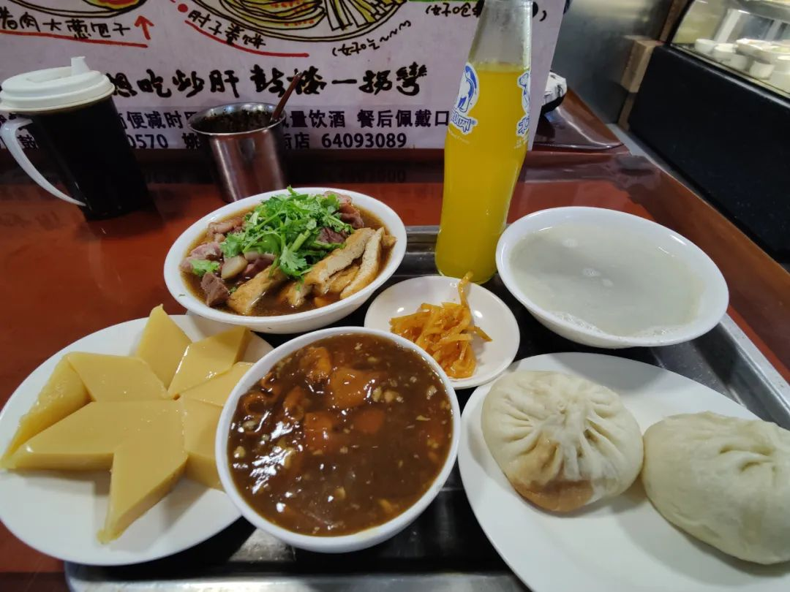

本文是张衔瑜的第235篇推文
共计3118个字，60张图
第不知道多少次，其实有一个明确的次数。我想应该是第五次。第一次在高一进高二的暑假，第二次是本科大二进大三的暑假来熟悉。第三次是去年六月回国的培训，第四次是从天津听完相声之后来北京看看剧。
时间线开始。
这次和去年参加的是同一个机构的培训，只不过内容不同。有趣的是，大致效果都还是一样：那些我以前懂的依然懂，那些我以前不懂的吃力得很。人们常说，遇事不决，量子力学。这句话在普通人听起来就是一种玄学，反映了了对量子力学不甚理解的人对此的迷茫中带着一丝自卫式的嘲讽。因为没法插嘴，于是转身说自己没法插嘴。
我搞科研，做一些计算。计算化学底下有三个大头：量子化学、第一性原理和分子动力学，做量子化学想要上台阶总是要用头顶开对量子力学理解的限制。所以就现在的我而言，遇事不决量子力学是一句合理但是苦痛的话。不好笑，其实我觉得《海底两万里》也没什么意思。那不过是我以前读初中的时候在步步高学习机里把玄幻小说从《神印王座》改成《海底两万里》，《斗破苍穹》改成《昆虫记》，还有《神墓》改成《童年·在人间·我的大学》。
来北京参加会议四天，第0天飞大兴。做好了核酸，被健康宝弹窗阴了一手，在黄花机场好等。确定赶不上我选的那一班之后，买了两杯茶颜。心里寻思着要是喝完这两杯了还跟北京12345弄不明白，我就回家。没想到喝完之后很困，在机场休息区睡了一会。回家。下午五点了，准备洗个澡，给手机充电。充电前一刷，弹窗解除了。
有形实体面对无形的政策，让我回想起很多不好的东西。比如上半年看过的以非正常渠道“偷渡”到所在北京社区，现在已经看不见了。我能说出来的就是之前在新加坡，我国内的手机号被大数据扫描判定为存在东南亚电信诈骗风险，于是需要我本人回湖南移动任意营业厅解除。我知道的票圈里都很多人最近在启程当时收到了弹窗，生气是给魔鬼留余地，罗翔老师来clarify为什么要为死刑犯辩护这点日渐深刻。
会议第1天飞大兴。下午一点到会场，Sob老师风采一如去年。四天的培训，从早上九点讲到十二点，下午一点讲到六点。每天讲八个小时，中间不做休息。Sob老师体力好，长发飘飘、声音稳健，我能听下来主要也是因为这的确和我有关，而且的确是马上上手就可以操作的内容。也正因为太扎实了，就好像出门吃饭点的都是主食一会儿就饱腹了，我也不可避免地会在学到没有效率了的时候就睡觉、或者以不那么玄学的方式离开了会场。
有一天早上，我打车去地铁站的时候，风吹感觉到一阵秋意。因为我得先打车到地铁站，大概十分钟的车到地铁站，然后再坐五十分钟的地铁去上课的地方。或者先走十分钟去地铁站，然后上一条很挤的线，再换乘，这里要一个小时。周一那天，我放在包侧边里的药就在金台路被挤掉了，后边的人拍了拍我，我才逆着人流回去捡。有秋意的那一天，那一天我在走廊上醒脑，就看到别人跟我一样，上班也摸鱼，想想别的事。

在北京除了上课的时候，也还是很精彩的。如果夸张地把从北京跑回长沙说成从美食荒漠到美食天堂，那从长沙到北京就也得把各种文化的东西称赞个遍。四天会议的晚上就没有闲着，每天都有新的文化科目去做。考虑到上课实在是太均一同质了，所以晚上的休息尽可能搞点不一样的。
和高中同学一大波人去吃宜宾招待所。
未果。转去了东来顺。
孟京辉《一个无政府主义者的意外死亡》
早就盯上这一部剧了。以前还在武汉的时候就想了好多次这部剧和《一个陌生女人的来信》，这次被我逮到机会了，那就更别提还是空花组担纲，台柱子们在大本营丰巢剧场。孟氏美学在主阵地果然发挥出来就知道这是先锋的个性。
新街口德云社
选在新街口当然是因为这里是德云社一队驻扎的地方。早一个礼拜看表演者，压轴出场：高峰。知道高老板在这挥舞旗子带队了，就承托了一堂的水准。两个半小时下来，比前述的先锋孟京辉多了一个小时。剧场会用各种幕间来切换不同的美学，相声曲艺则是逗哏和捧哏在台上，你来我往。不一样，不能比，但是有偏好，又但 我都会去听。

北京电影节《年轻的仪式》
在到北京之前，巧合地在晴雨天的朋友圈看到了关于北影节的事情。于是去搜搜信息，看了一下片单。选在没有其他事排上的日子里，去看北影节，虽然也要抢票。果然北影节选的电影不同于平常在电影院排的那样。不是无脑跟着走着瞎的电影。
这一部是去年才上映的，实不相瞒我没有太理解。虽然用影视评论的方法，同于中学时期做一篇阅读理解的方法，即使你看不懂这篇文章，但是依然能说三道四。我也能把这部电影中一些线清理个七七八八，但是总对里边关于文化的内容多一些讨论，而不是仅仅留在我把电影手法分析清楚就完事儿了的层面。
北京电影节《尤利西斯的凝视》
前面那一部是玻利维亚的，看完之后去搜，才知道这地方在南美。文化的，我完全不知道。这一部讲一个人逡巡于保加利亚、希腊、爱沙尼亚、塞尔维亚和阿尔及利亚，一些我只在第三帝国三部曲中看到过的一些地方。
我也看了《错宴》。
但是文化的东西，我知道得太少。也不知道他们能把反战题材拍得这么好。上一部电影只有一个半小时，手环说我从一坐进电影院就开始睡觉，睡到电影结束；这部电影有三个小时，超过一个小时的时间里没有人声，只有各种动作。最后一段大雾天的雪花屏，我也睡着了，但是不妨碍我认为还是得新接触一些文化。
北京人艺《油漆未干》
在首都剧场看，这里也是北京人艺的主阵地。这部是法国三幕世态喜剧。导览词写着，这部剧严格遵守古希腊喜剧“三一律”原则，即时间的一致，地点的一致和表演的一致。整个故事发生在同一天里，地点只有一个，情节上也只有一条主线，是17世纪的流行目。
如果国内能排的话，大概也最高水准也就在北京人艺了吧。我也想看《茶馆》。北京人民艺术剧院/剧团是真的有人，老少男女搭配上来，连音色里都一股子戏味。没得演员职业和剧本的可持续积累根本做不到，也自然在剧作带给观众的感受里教别的地方望洋兴叹。

吃了一些东西。憨憨培训地方没有吃早饭，我就在地铁上点个外卖送到饭店门口，然后坐在不会有人经过的消防通道里吃。没拍的，可以直接认为我没吃。东来顺发过了。
驴肉火烧
羊蝎子
炸酱面
要想吃炒肝，鼓楼一拐弯儿。

姚记炒肝店从我第二次来北京吃到之后，这四次来北京吃了三次。等的士司机来接我的时候，豆汁儿喝得只剩最底下浓墨重彩的了。结论：还是北冰洋好喝。
这么一想还有半个冰箱我切好了，放在Nuage élégant先生的西瓜里。已经忘记这件事情一天了，可不要出什么乱子才好。致谢钮阿芝先生take me S&S
等Ta下班的时候我就在朝阳门的地下通道里坐着（误
这么一说我就又想起来北京交警不查电动车戴头盔，反倒没事蹲一蹲电动车带人这件事
到北京这么多次，五次，第一次那会儿我还不写公众号。这一次我寻思着总要去故宫看看了，因为我都没去过。去故宫怎么能不拿相机呢？于是拍了很多很好看的照片。过了午门之后我脑海里的第一个词是“蔚为大观”，丝毫没有夸张。


出镜Caeser
建筑的事情，文物的事情，礼制的事情，我都多少懂一些。历史也浅浅地知道一点。但是到紫禁城，有时候也还想带一个甄学家一起走，没事跟我在哪个殿讲一讲这里又赐死了谁之类的小故事。

清乾隆各种釉彩大瓶的故宫底账名为乾隆款多色地青花斗彩什锦双耳大瓶，全国馆藏文物数据库登记名称为各色釉彩大瓶

来一张我的签名档，在御花园的亭子里
我有个疑问，这次去为什么没有看到御膳房。当然，虽然最后是从东华门而不是神武门出来，但是没有看到文华殿御书房。留个念想，故宫下次在人不多的时候还得再冲进来玩一玩。希望那时候能更像博物院，而不是草草几个展品就收了，然后游客们在中轴线越挤越多。
总的来说，到北京的目的达到了。上课，上着夸张到强度大得我换三个头都学不完的课。然后散学了之后去看看剧和电影，找好朋友一起聊天吃饭。北京是为数不多能做到这样的城市。
世界线收束。